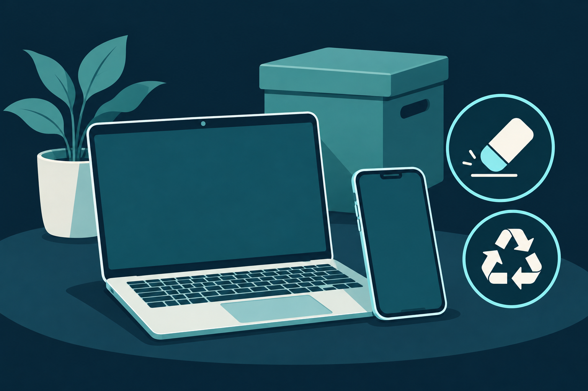

Before selling or recycling a device
Prepare the device before it leaves your hands. The aim is to keep what you need and remove your personal information from the equipment you pass on.

Preparing a device before passing it on.
Work through this in order
-
Keep the files you need
Make a backup and check that you can access it from another device. The existing backup guide explains how to keep separate copies.
-
Check access to your accounts
Make sure you can sign in elsewhere. If the old phone receives verification codes or approves logins, move that access and test it before erasing anything.
-
Use the instructions for your model
Follow the manufacturer’s selling or erasure procedure, including any account-unlinking steps. Choose the option that removes personal data, not one that keeps your files.
-
Finish the handover
Check that the erase procedure completed before giving the device away. If the device is broken and cannot be erased, seek advice from the manufacturer or an appropriate disposal service.